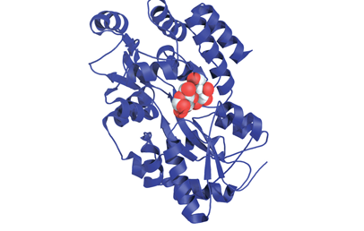
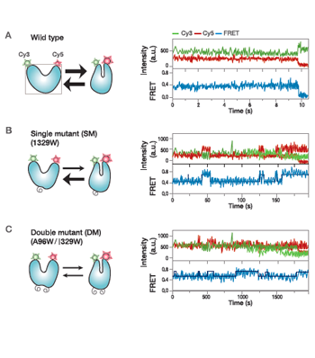
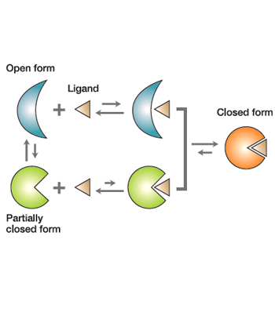

주제별 연구성과
주제별 연구성과
KAIST RESEARCH ACHIEVEMENTS
단백질은 어떻게 특정 생체
분자만 인식하고 결합할까?
생명과학과 김학성
요약
단백질이 세포 내에서 생체분자를 인식하여 생명현상을 정상적으로 유지하는 기작과 인지 기작에 오류에 따른 각종 질병이 어떻게 발생하는 지에 대해 정확하게 규명할 수 있게 될 것이다. 이를 통해 복잡한 생명현상의 이해가 가능하고 질병의 발병 기작을 규명하여 보다 치료 효과가 높고 부작용이 적은 치료제의 개발이 가능할 것이다.
연구내용

단백질은 생체분자를 특이적으로 인지하고 결합하면서 모든 생명현상을 조절해 생명현상을 유지하는데 가장 중요한 역할을 한다.단백질의 생체분자 인식에 오류가 발생하면 비정상적 현상으로 각종 질병이 유발되기도 한다. 따라서, 단백질이 생체분자를 인식하고 결합하는 메카니즘의 규명은 복잡한 생명현상을 이해하고 각종 질병의 치료제를 개발하는데 필수적이다. 기존의 연구는 단순히 단백질이 생체분자와 결합하기 전 후의 단백질 구조 차이에 의존하였기 때문에 단백질의 분자 인식 메카니즘을 정확하게 설명하지 못하고, 단백질의구조가 매우 유동적인 경우는 기작의 규명이 거의 불가능하였다. 따라서, 새로운 방법의 개발 및 이를 이용한 단백질의 생체분자 인식메카니즘의 규명이 절실히 필요하다.
단 분자 FRET 실험
본 연구에서는 한 개의 단백질 분자의 구조 변화를 직접 관찰하는 단 분자 형광 에너지 전이(single-molecule FRET)방법을 이용하여 단백질이 가장 안정적인 '열린 구조'와 상대적으로 불안정한 '부분 닫힘 구조'를 반복하면서 리간드와 결합하여 일어나는 단백질의 구조변화를 실시간으로 분석하였다.(그림 2)
 그림 2. 단백질의 구조 변화를 단 분자(single molecule) 수준에서 실시간 분석
연구결과
MBP(Maltose Binding Protein)의 구조 변화를 직접 관찰하고 각 상태에서의 체류시간을 측정함으로써 단백질의 '열린 구조'에 malt-ose가 결합한 후 구조 변화가 이루어진다는 것을 증명하였다. 이는 단백질의 구조 전환 속도가 변하는 현상을 단 분자 수준에서 분석해 단백질의 생체분자 인식 메커니즘을 증명한 최초의 연구 결과이다.(그림 3)
 그림 3. 단백질의 생체분자 인식 기작 모식도
결론
단 분자 형광에너지 전이 방법을 새롭게 적용하여 단백질이 생체분자를 인식하는 메커니즘을 이해할 수 있게 되었고, 단백질의 기능을 보다정확하게 파악할 수 있어 향후 복잡한 생명현상의 이해는 물론 보다 효능이 높은 치료제의 개발에 기여할 것으로 기대된다.
기대효과
단백질의 생체분자 인식 메카니즘을 정확하게 설명할 수있는 새로운 방법을 제시하였음, 단백질의 생체 조절기능을 보다 정확하게 파악하여 복잡한 생명 현상을 이해하는데 기여, 단백질의 분자 인식 기작은 각종 질병과 연관되므로 효능이 높은 치료제 개발에 크게 기여.
연구비 지원
ㆍ미래창조과학부(미래 유망 파이오니어 사업)
연구실적
ㆍNature Chemical Biology 발표, Eun kyung Kim, Sang hwa Lee, Aram Jeon, Jung Min Choi, Hee-Seung Lee, Sungchul Hohng, Hak-Sung Kim; "A single-molecule dissection of ligand binding to a protein with intrinsic dynamics", 2013.05, 313-318
ㆍ2013년 생물학연구정보센터(BRIC) 생명과학 연구자 선정
ㆍ학술적 가치가 높은 바이오 연구성과' Top5 선정
ㆍ2013 Agawal award 수상
ㆍ국제석학모임 F1000 '괄목할 만한 논문'